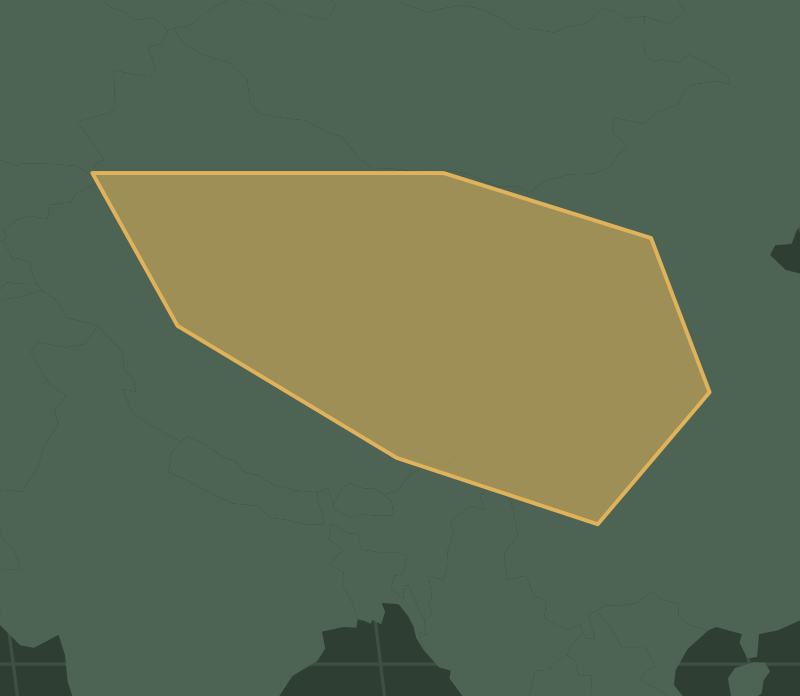

Planta · Cannabáceas · Asia oriental, hoy en todo el mundo
Cannabis
Cannabis sativa L.
Una hierba que la humanidad cultiva desde hace unos 12.000 años, primero como fibra y alimento. Sus flores y resina contienen THC, que da el efecto psicoactivo, y CBD, que no lo da; no es un psicodélico clásico.126
También se llamamarihuana · hierba · maría · cáñamo · hachís · kifi
- Qué es
- Hierba anual con flores en plantas macho y hembra
- Territorio
- Origen en Asia oriental; hoy se cultiva en todo el mundo
- Parte usada
- Flores y resina de la planta hembra; también fibra y semillas
- Principios activos
- THC, CBD y otros cannabinoides
- Empieza y dura
- Minutos si se fuma; más lento y largo si se come
- Quién guarda su memoria
- Pueblos de Asia central y oriental; escitas, chinos, indios
Botánica
Una hierba que sube rápido en un verano
Es una hierba anual, de tallo erguido y hojas palmeadas, con entre tres y nueve folíolos. Según la variedad, mide desde unos pocos palmos hasta varios metros.34
Normalmente hay plantas macho y plantas hembra por separado. Las hembras forman los racimos de flores cubiertos de pelos glandulares que segregan la resina; los machos sueltan el polen y se marchitan.345
Una misma especie da tres cosas: fibra del tallo, aceite de las semillas y cannabinoides de las flores y hojas.4
- Familia
- Cannabaceae
- Ciclo
- Anual: una sola estación
- Hoja
- Palmeada, con 3 a 9 folíolos
- Flores
- Machos y hembras en plantas separadas, sobre todo
Memoria y tradición
Fibra, alimento, medicina y rito
Se cree que el cannabis se cultiva desde hace al menos 12.000 años, al principio por la fibra y el grano.2 Un estudio genómico de más de cien plantas de todo el mundo lo sitúa por primera vez en Asia oriental, en China, y no en Asia central como se pensaba antes.1
Su uso como medicina aparece ya en el herbario chino atribuido a Shennong, que se puso por escrito en el siglo II. En una tumba de hace unos 2.700 años en Yanghai, en el noroeste de China, se halló a un chamán enterrado con cannabis bien conservado.2
Heródoto contó que los escitas de la estepa euroasiática echaban semillas de cáñamo sobre piedras al rojo dentro de una tienda e inhalaban el humo.2 En Europa, el siglo XIX trajo el interés médico y psiquiátrico por el hachís.16
En el tiempo
Primer cultivo de cannabis en Asia oriental, para fibra y grano.12
Un chamán es enterrado en Yanghai, noroeste de China, con cannabis.2
Se pone por escrito el herbario atribuido al emperador Shennong, que incluye el cannabis.2
Moreau de Tours publica en París su estudio sobre el hachís y la enfermedad mental.16
Gaoni y Mechoulam aíslan y describen el THC.7
Se describe la anandamida, el cannabinoide que produce el propio cerebro.8
Sus nombres
- cannabis
- nombre latino del género; «sativa» significa «cultivada»
- cáñamo
- nombre de la planta cultivada por su fibra y con muy poco THC
- marihuana
- nombre mexicano que se extendió a la hierba psicoactiva
- hachís
- resina prensada de la planta
Cáñamo y cannabis psicoactivo son la misma especie; lo que cambia es la variedad, el contenido de THC y el uso.4
Territorio y cuidado
Una planta que viajó con la gente

El estudio genómico apunta a Asia oriental como lugar de la primera domesticación, hace unos 12.000 años, y a un linaje ancestral que sigue vivo en plantas asilvestradas de China.1
Desde allí se extendió por todo el mundo, siempre de la mano del ser humano. Hoy se cultiva casi en cualquier clima templado, y no hay una población silvestre que cuidar como ocurre con otras medicinas de esta enciclopedia.
Qué ayuda
- Informarse bien antes de decidir: la guía de APDER recoge riesgos e interacciones.
- Preferir producto de origen conocido y, si existe, analizado: la potencia varía mucho.
- Recordar que la planta da fibra, alimento y medicina; no solo una droga.
Qué contiene
Más de un centenar de cannabinoides
La planta produce más de un centenar de cannabinoides. Los dos principales son el THC (Δ9-tetrahidrocannabinol), que causa el efecto psicoactivo, y el CBD (cannabidiol), que no lo produce.714
Actúan sobre el sistema cannabinoide del cuerpo, un sistema de señales propio del cerebro y de otros órganos. En 1992 se identificó la anandamida, una sustancia que el cerebro fabrica y que se une al mismo receptor que el THC.8
Lo aislaron y describieron Gaoni y Mechoulam en 1964.[7]
No produce el efecto psicoactivo del THC; se usa como medicamento en algunas epilepsias graves.[14]
La experiencia
Relajación, otro ritmo del tiempo y más apetito
Relaja, altera la percepción del tiempo y aumenta el apetito. A dosis altas, y sobre todo comido, puede causar ansiedad, paranoia y efectos parecidos a los de un psicodélico.6
Los comestibles tardan en hacer efecto y duran más, por lo que es fácil pasarse sin darse cuenta.6 El estado de ánimo, el entorno y la persona cambian mucho la vivencia.
Esquema orientativo: cambia con la preparación, la cantidad y la persona.
Investigación
Qué se ha estudiado
Hay medicamentos con cannabinoides autorizados en España: un pulverizador bucal para la espasticidad de la esclerosis múltiple y una solución de cannabidiol para algunas epilepsias graves de la infancia.1314
Una revisión de las Academias Nacionales de Estados Unidos concluyó que hay evidencia sólida para el dolor crónico y las náuseas por quimioterapia, y menos para otros usos.15
Alcance de estos datosLa evidencia vale para esos medicamentos concretos, no para fumar o comer cannabis en general. Con el cannabis recreativo, los datos apuntan sobre todo a riesgos.
Con cuidado
Lo que conviene saber antes
El consumo frecuente: unas 3 de cada 10 personas que consumen tienen un trastorno por consumo.9
El uso diario de cannabis potente se asocia a más riesgo de psicosis.10 Ojo con los antecedentes personales o familiares.
Con alcohol o sedantes, que suman sus efectos.11 También puede cambiar los niveles en sangre de anticoagulantes y antiepilépticos.1214
En Europa, la resina incautada en 2024 tenía de media un 24,6 % de THC y la hierba un 12 %; la de la resina ha subido un 66 % en diez años.17
Para seguir
Libros y medicinas emparentadas
Otra planta cotidiana cuyos compuestos actúan en el cerebro.
Una planta de otra familia con efecto estimulante y sedante.
Una planta sudafricana tradicionalmente masticada.
Fuentes
De dónde sale cada dato
- Ren G, Zhang X, Li Y, et al. Large-scale whole-genome resequencing unravels the domestication history of Cannabis sativa. Sci Adv. 2021;7(29):eabg2286.
- Nature. 2015;525:S10-S11. Historia del cannabis. nature.com/articles/525S10a.
- University of Missouri Extension. Industrial hemp (Cannabis sativa L.): botany. extension.missouri.edu/publications/mx80.
- Naturalis Biodiversity Center. Cannabis sativa. Useful Plants. useful-plants.linnaeus.naturalis.nl.
- Wikipedia. «Cannabis». en.wikipedia.org (consultada el 24-11-2026).
- Health Canada. Health effects of cannabis. canada.ca. Modificada el 25 de marzo de 2024.
- Gaoni Y, Mechoulam R. Isolation, structure, and partial synthesis of an active constituent of hashish. J Am Chem Soc. 1964;86:1646-1647.
- Devane WA, Hanuš L, Breuer A, et al. Isolation and structure of a brain constituent that binds to the cannabinoid receptor. Science. 1992;258(5090):1946-1949.
- Centers for Disease Control and Prevention (CDC). Understanding your risk for cannabis use disorder. cdc.gov. Revisada el 5 de diciembre de 2024.
- Di Forti M, Quattrone D, Freeman TP, et al. The contribution of cannabis use to variation in the incidence of psychotic disorder across Europe (EU-GEI). Lancet Psychiatry. 2019;6(5):427-436.
- Hartman RL, Brown TL, Milavetz G, et al. Controlled cannabis vaporizer administration: blood and plasma cannabinoids with and without alcohol. Clin Chem. 2015;61(6):850-869.
- Thomas TF, Metaxas ES, Nguyen T, et al. Case report: medical cannabis—warfarin drug-drug interaction. J Cannabis Res. 2022;4:6.
- AEMPS. Ficha técnica de Sativex solución para pulverización bucal. CIMA. cima.aemps.es.
- AEMPS. Ficha técnica de Epidyolex 100 mg/ml solución oral (cannabidiol). CIMA. cima.aemps.es.
- National Academies of Sciences, Engineering, and Medicine. The health effects of cannabis and cannabinoids. Washington: National Academies Press; 2017.
- Moreau de Tours J-J. Du hachisch et de l'aliénation mentale: études psychologiques. París; 1845.
- Agencia de la Unión Europea sobre Drogas (EUDA). Cannabis: the current situation in Europe (European Drug Report 2026). euda.europa.eu.
- Mapa APDER, con datos de Natural Earth · dominio público
- Dibujos de moléculas APDER
Última revisión: 24 de noviembre de 2026. Si ves un error, escríbenos a info@apder.org.